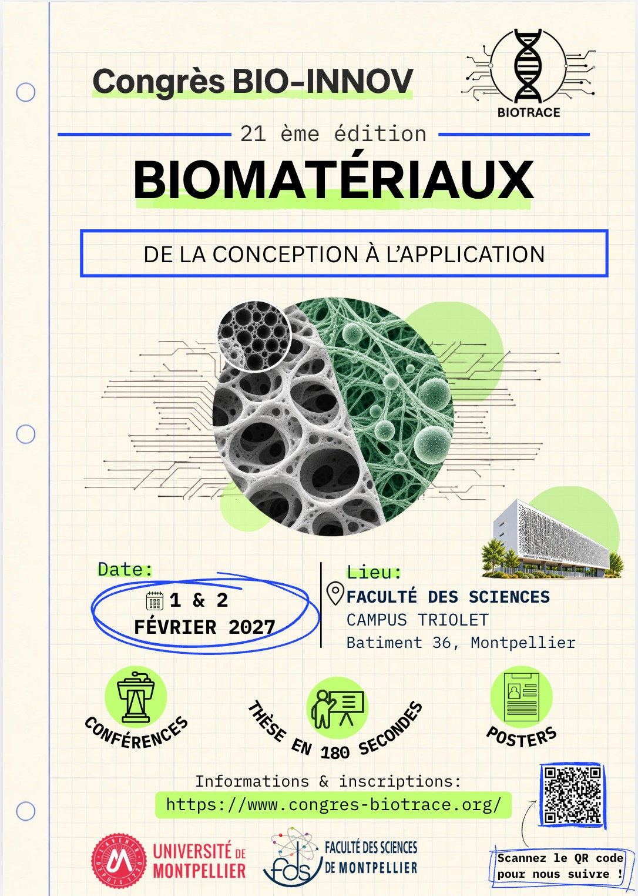

Programme à venir
L’affiche annonce des conférences, des présentations « Thèse en 180 secondes » et des posters. Programme à venir : les sessions détaillées et leurs horaires seront communiqués après confirmation.
Les biomatériaux.
De la conception à l’application.
Congrès scientifique organisé par les étudiants du Master IBION-Tec.
Les biomatériaux sont conçus pour interagir avec des systèmes biologiques. À la croisée de la biologie, de la chimie et de l’ingénierie, ils ouvrent des perspectives pour la santé, la réparation des tissus et les technologies du vivant.
Bio Innov 2027 invite à découvrir ce domaine et à échanger autour de ses enjeux scientifiques.
Biotrace est l’association étudiante de la formation. Le congrès est organisé par les étudiants du Master IBION-Tec.

L’affiche annonce des conférences, des présentations « Thèse en 180 secondes » et des posters. Programme à venir : les sessions détaillées et leurs horaires seront communiqués après confirmation.
Programme à venir. Les intervenants et leurs présentations seront annoncés ici.
1er et 2 février 2027
Faculté des Sciences de Montpellier
Campus Triolet — Bâtiment 36
Place Eugène Bataillon, 34090 Montpellier
La salle précise et les horaires seront communiqués ultérieurement.
Consulter le plan ↗L’affiche indique le site du congrès pour les informations et les inscriptions.
Informations & inscriptions ↗Les modalités détaillées restent à préciser. Si le site du congrès est indisponible, contactez-nous par courriel.
Nous écrire au sujet du congrès →Les partenaires confirmés seront présentés après communication de leurs informations et logos.
Les contenus vérifiés des anciennes éditions seront ajoutés ici. Le programme 2027 sera présenté séparément.